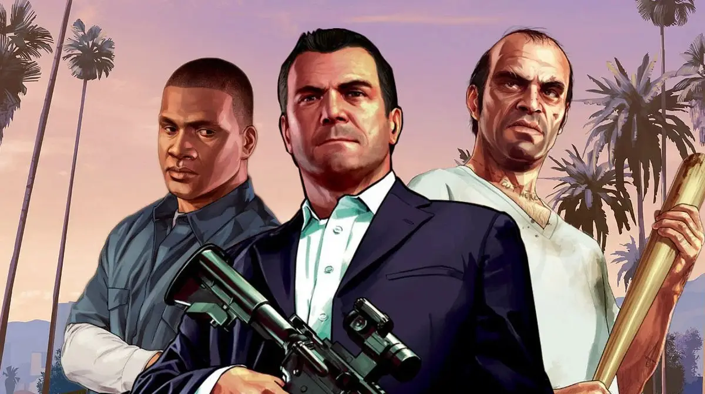

Grand Theft Auto V (GTA V) is an action-adventure game developed by Rockstar North and published by Rockstar Games. Released in 2013, it is set in the fictional state of San Andreas and follows the interconnected stories of three protagonists: Michael, Franklin, and Trevor. The game offers an expansive open world, allowing players to explore urban and rural areas, engage in various missions, and participate in diverse activities like heists and racing. GTA V also features a robust online multiplayer mode, GTA Online, where players can create and customize their own characters, join crews, and complete missions with others. The game is renowned for its detailed graphics, immersive gameplay, and rich narrative.
Grand Theft Auto V (GTA 5) is an action-adventure game developed by Rockstar North and released by Rockstar Games in 2013. Set in the fictional state of San Andreas, which is based on Southern California, it features a vast open world for players to explore. The game follows three main protagonists: Michael De Santa, a retired bank robber; Franklin Clinton, a street gangster; and Trevor Philips, a violent drug dealer. Players can switch between these characters to perform various missions and heists. GTA 5 offers both single-player and online multiplayer modes, with the latter allowing up to 30 players to engage in cooperative or competitive activities. The game is renowned for its detailed world, engaging storyline, and freedom of gameplay. It has received critical acclaim for its narrative, presentation, and open-ended gameplay. GTA 5 has become one of the best-selling video games of all time, maintaining popularity years after its release. The game is available on multiple platforms, including PlayStation, Xbox, and PC.